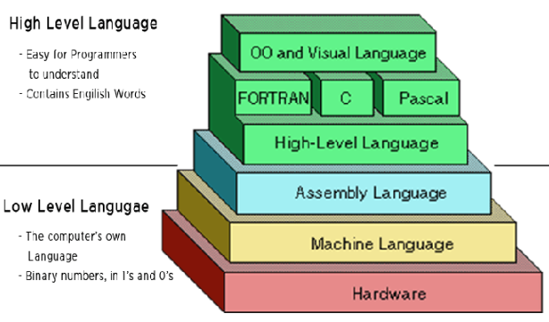
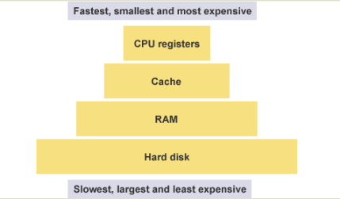
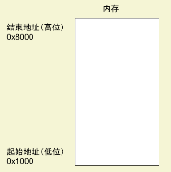
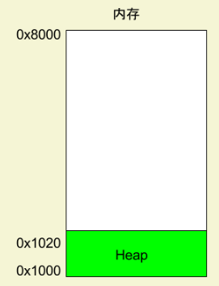
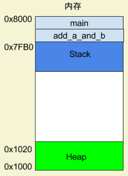
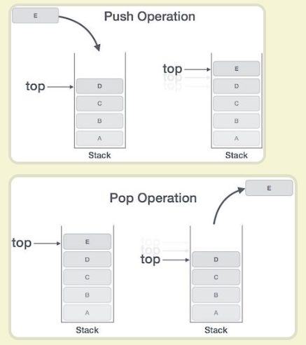
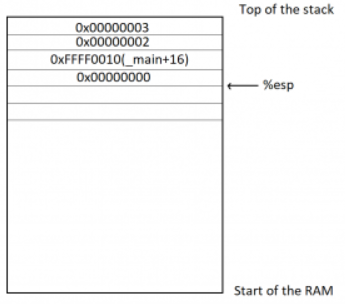

data:2020-11-24
背景
计算机不理解高级语言，必须通过编译器转成二进制代码，才能运行。计算机真正能够理解的是低级语言，它专门用来控制硬件。

编译器的作用，就是将高级语言写好的程序，翻译成一条条操作码（二进制，比如加法指令就是00000011）。
对于人类来说，二进制程序是不可读的，根本看不出来机器干了什么。为了解决可读性的问题，以及偶尔的编辑需求，就诞生了汇编语言。
汇编语言就是低级语言，直接描述/控制 CPU 的运行。如果你想了解 CPU 到底干了些什么，以及代码的运行步骤，就一定要学习汇编语言。
汇编是什么
汇编语言是二进制指令的文本形式，与指令是一一对应的关系。比如，加法指令00000011写成汇编语言就是 ADD。只要还原成二进制，汇编语言就可以被 CPU 直接执行，所以它是最底层的低级语言。
assembling：文字指令翻译成二进制
完成这个步骤的程序就叫做 assembler。它处理的文本，自然就叫做 aseembly code。标准化以后，称为 assembly language，缩写为 asm，中文译为汇编语言。
寄存器
CPU 本身只负责运算，不负责储存数据。数据一般都储存在内存之中，CPU 要用的时候就去内存读写数据。但是，CPU 的运算速度远高于内存的读写速度，为了避免被拖慢，CPU 都自带一级缓存和二级缓存。基本上，CPU 缓存可以看作是读写速度较快的内存。
但是，CPU 缓存还是不够快，另外数据在缓存里面的地址是不固定的，CPU 每次读写都要寻址也会拖慢速度。
因此，除了缓存之外，CPU 还自带了寄存器（register），用来储存最常用的数据。也就是说，那些最频繁读写的数据（比如循环变量），都会放在寄存器里面，CPU 优先读写寄存器，再由寄存器跟内存交换数据。
寄存器不依靠地址区分数据，而依靠名称。每一个寄存器都有自己的名称，我们告诉 CPU 去具体的哪一个寄存器拿数据，这样的速度是最快的。

32位 CPU、64位 CPU 这样的名称，其实指的就是寄存器的大小。32 位 CPU 的寄存器大小就是4个字节。
EAX
EBX
ECX
EDX
EDI
ESI
EBP
ESP
上面这8个寄存器之中，前面七个都是通用的。ESP 寄存器有特定用途，保存当前 Stack 的地址
内存模型
寄存器只能存放很少量的数据，大多数时候，CPU 要指挥寄存器，直接跟内存交换数据。
程序运行的时候，操作系统会给它分配一段内存，用来储存程序和运行产生的数据。这段内存有起始地址和结束地址，比如从0x1000到0x8000，起始地址是较小的那个地址，结束地址是较大的那个地址。

程序运行过程中，对于动态的内存占用请求（比如新建对象，或者使用malloc命令），系统就会从预先分配好的那段内存之中，划出一部分给用户，具体规则是从起始地址开始划分（实际上，起始地址会有一段静态数据，这里忽略）。举例来说，用户要求得到10个字节内存，那么从起始地址0x1000开始给他分配，一直分配到地址0x100A，如果再要求得到22个字节，那么就分配到0x1020。
堆

这种因为用户主动请求而划分出来的内存区域，叫做 Heap（堆）。它由起始地址开始，从低位（地址）向高位（地址）增长。Heap 的一个重要特点就是不会自动消失，必须手动释放，或者由垃圾回收机制来回收。
栈
除了 Heap 以外，其他的内存占用叫做 Stack（栈）。简单说，Stack 是由于函数运行而临时占用的内存区域。
1 | int main() { |
上面代码中，系统开始执行main函数时，会为它在内存里面建立一个帧（frame），所有main的内部变量（比如a和b）都保存在这个帧里面。main函数执行结束后，该帧就会被回收，释放所有的内部变量，不再占用空间。
Stack 是由内存区域的结束地址开始，从高位（地址）向低位（地址）分配。比如，内存区域的结束地址是0x8000，第一帧假定是16字节，那么下一次分配的地址就会从0x7FF0开始；第二帧假定需要64字节，那么地址就会移动到0x7FB0。

main函数内部调用了add_a_and_b函数。执行到这一行的时候，系统也会为add_a_and_b新建一个帧，用来储存它的内部变量。也就是说，此时同时存在两个帧：main和add_a_and_b。一般来说，调用栈有多少层，就有多少帧。等到add_a_and_b运行结束，它的帧就会被回收，系统会回到函数main刚才中断执行的地方，继续往下执行。通过这种机制，就实现了函数的层层调用，并且每一层都能使用自己的本地变量。

所有的帧都存放在 Stack，由于帧是一层层叠加的，所以 Stack 叫做栈。生成新的帧，叫做”入栈”，英文是 push；栈的回收叫做”出栈”，英文是 pop。Stack 的特点就是，最晚入栈的帧最早出栈（因为最内层的函数调用，最先结束运行），这就叫做”后进先出”的数据结构。每一次函数执行结束，就自动释放一个帧，所有函数执行结束，整个 Stack 就都释放了。
看c语言如何转换成汇编
1 | //example.c |
1 | //gcc 将这个程序转成汇编语言 |
上面的命令执行以后，会生成一个文本文件example.s，里面就是汇编语言，包含了几十行指令。这么说吧，一个高级语言的简单操作，底层可能由几个，甚至几十个 CPU 指令构成。CPU 依次执行这些指令，完成这一步操作。
1 | //example.s |
可以看到，原程序的两个函数add_a_and_b和main，对应两个标签_add_a_and_b和_main。每个标签里面是该函数所转成的 CPU 运行流程。
每一行就是 CPU 执行的一次操作。它又分成两部分，就以其中一行为例。这一行里面，push是 CPU 指令，%ebx是该指令要用到的运算子。一个 CPU 指令可以有零个到多个运算子。
1 | push %ebx |
push
1 | push 3 |
根据约定，程序从_main标签开始执行，这时会在 Stack 上为main建立一个帧，并将 Stack 所指向的地址，写入 ESP 寄存器。后面如果有数据要写入main这个帧，就会写在 ESP 寄存器所保存的地址。
push指令用于将运算子放入 Stack，这里就是将3写入main这个帧。如何实现？
push指令其实有一个前置操作。它会先取出 ESP 寄存器里面的地址，将其减去4个字节，然后将新地址写入 ESP 寄存器。使用减法是因为 Stack 从高位向低位发展，4个字节则是因为3的类型是int，占用4个字节。得到新地址以后， 3 就会写入这个地址开始的四个字节。
1 | push 2 |
push指令将2写入main这个帧，位置紧贴着前面写入的3。这时，ESP 寄存器会再减去 4个字节（累计减去8）。

call
1 | call _add_a_and_b |
上面的代码表示调用add_a_and_b函数。
1 | push %ebx |
这一行表示将 EBX 寄存器里面的值，写入_add_a_and_b这个帧。这是因为后面要用到这个寄存器，就先把里面的值取出来，用完后再写回去。这时，push指令会再将 ESP 寄存器里面的地址减去4个字节（累计减去12）。
mov
mov指令用于将一个值写入某个寄存器。
1 | mov %eax, [%esp+8] |
这一行代码表示，先将 ESP 寄存器里面的地址加上8个字节，得到一个新的地址，然后按照这个地址在 Stack 取出数据。根据前面的步骤，可以推算出这里取出的是2，再将2写入 EAX 寄存器。
1 | mov %ebx, [%esp+12] |
上面的代码将 ESP 寄存器的值加12个字节，再按照这个地址在 Stack 取出数据，这次取出的是3，将其写入 EBX 寄存器。
add
add指令用于将两个运算子相加，并将结果写入第一个运算子。
1 | add %eax, %ebx |
上面的代码将 EAX 寄存器的值（即2）加上 EBX 寄存器的值（即3），得到结果5，再将这个结果写入第一个运算子 EAX 寄存器。
pop
pop指令用于取出 Stack 最近一个写入的值（即最低位地址的值），并将这个值写入运算子指定的位置。pop指令还会将 ESP 寄存器里面的地址加4，即回收4个字节。
1 | pop %ebx |
上面的代码表示，取出 Stack 最近写入的值（即 EBX 寄存器的原始值），再将这个值写回 EBX 寄存器（因为加法已经做完了，EBX 寄存器用不到了）。
ret
ret指令用于终止当前函数的执行，将运行权交还给上层函数。也就是，当前函数的帧将被回收。该指令没有运算子。
1 | ret |
随着add_a_and_b函数终止执行，系统就回到刚才main函数中断的地方，继续往下执行。
1 | add %esp, 8 |
上面的代码表示，将 ESP 寄存器里面的地址，手动加上8个字节，再写回 ESP 寄存器。这是因为 ESP 寄存器的是 Stack 的写入开始地址，前面的pop操作已经回收了4个字节，这里再回收8个字节，等于全部回收。
1 | ret |
最后，main函数运行结束，ret指令退出程序执行。